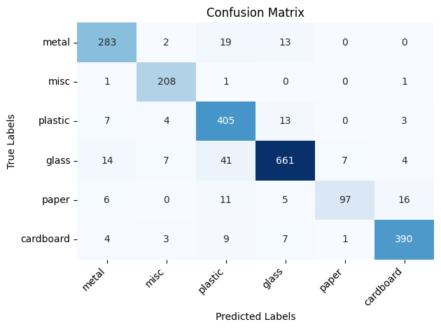
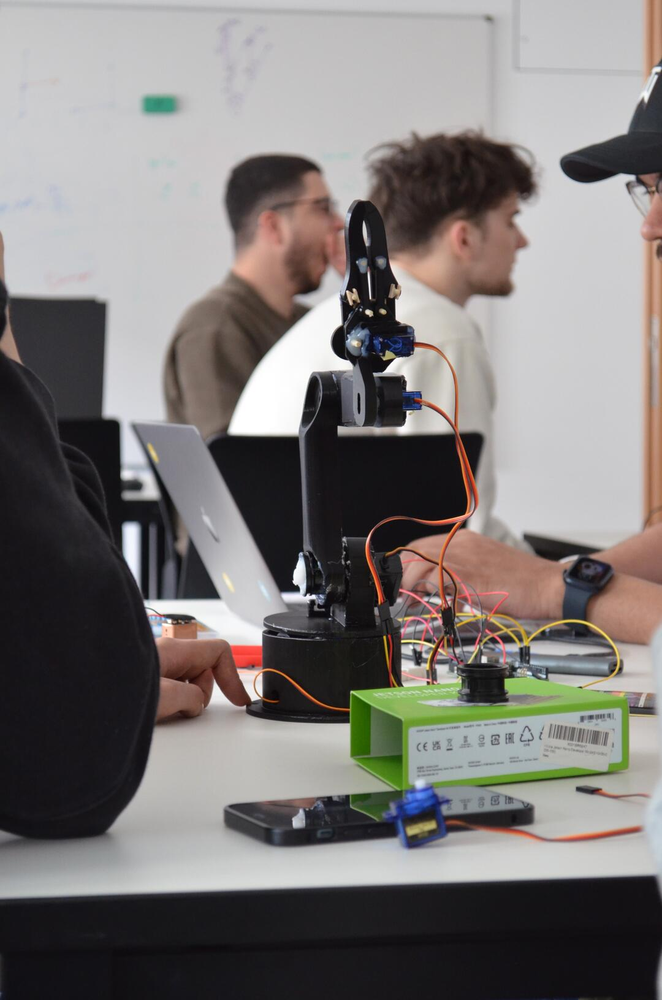
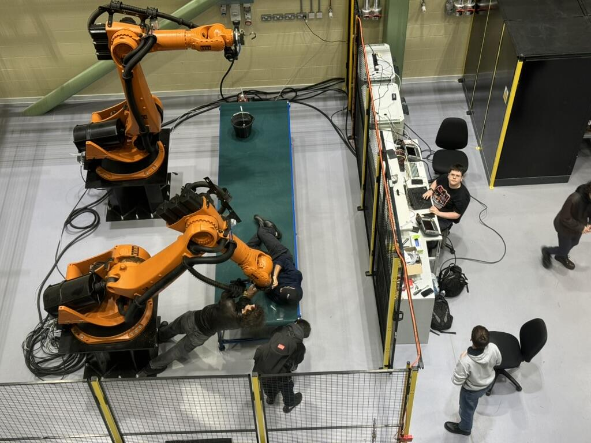
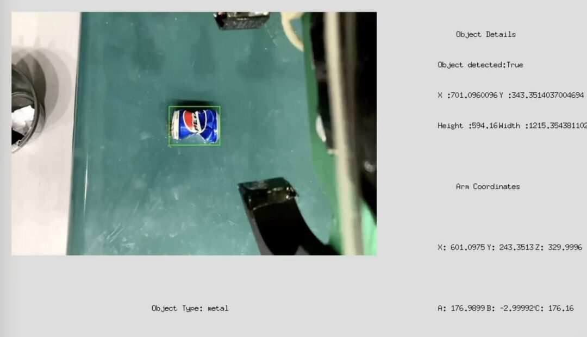
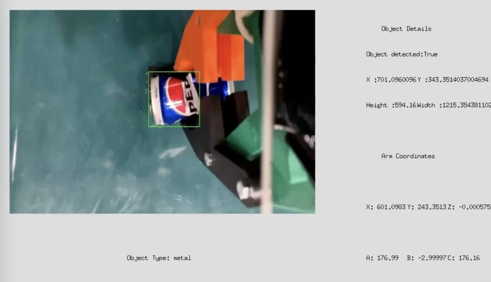
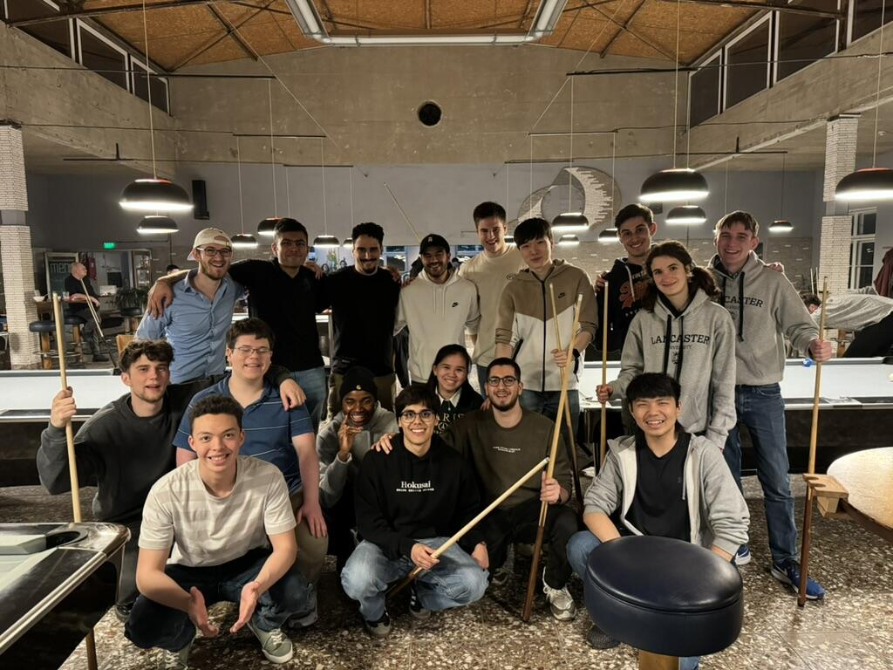

Automating waste sorting
This project was developed as part of an international collaborative initiative between the Lancaster University campuses of Leipzig (Germany) and Bailrigg (England).
HW: KUKA industrial robots, the same ones used in car assembly lines, capable of handling loads of 180kg and moving at 3m/s.
Motivation: By innovating in waste management, we hope to contribute toward sustainable solutions for one of the world’s growing environmental concerns. Our long-term vision is to extend this technology to more critical areas, such as nuclear waste management, where safe and efficient handling is of utter importance.
I led the computer vision team, focusing on object detection and image classification. For the code, see repo.
Dataset
Custom curated dataset of labeled trash/waste images. These are spread across 6 subfolders (waste types). The dataset can be downloaded here.
Model
Fine-tuned pre-trained ResNet50 architecture. Model weights can be downloaded here.

Demo




Credits
- Matias Barandiaran
- Parichay Sachdev
- Mustafa Azizi
- Athar Syed
- Osvaldo Catine
- Mikelis Kamepe
- Inderjot Sitt
- Isaac Richardson
- Andre Mariucci
- Toby Vermon
